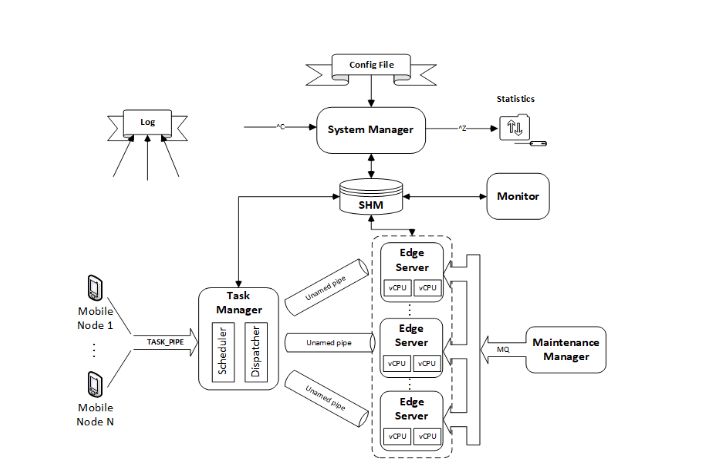

JoaoESmoreira
Computational Offloading System
This project implements a computational offloading simulator, designed to emulate distributed task execution across multiple processing nodes.
The main goal of this project is to simulate task offloading — the transfer of computationally intensive tasks from local devices to more powerful remote servers.

This concept is highly relevant in environments with limited resources such as smartphones or IoT devices.
Technologies Used
The system was developed in C language as part of a Systems Programming assignment. The main technologies used:
- C Programming Language
- POSIX Threads (pthreads)
- Inter-Process Communication (IPC)
- Shared Memory, Semaphores, Message Queues
- Linux Environment
Implementation
The implementation uses the C standard libraries and several system-level mechanisms, including:
- Threads (
<pthread.h>) for concurrent task management - Processes created with the
fork()system call - Shared memory, message queues, and inter-process communication (IPC) (
<sys/shm.h>,<sys/msg.h>,<sys/ipc.h>) - Synchronization mechanisms such as semaphores, mutexes, and condition variables (
<semaphore.h>,<pthread.h>)
The program also performs logging in log.txt and reads configurations from configFile.txt.
Compilation and Execution
A Makefile is included to simplify compilation and execution.
To compile
make
To start the simulator
./offload_simulator configFile.txt
To run a mobile node
./mobile_node
To show statistics
echo STATS > TASK_PIPE
To terminate
echo EXIT > TASK_PIPE
To clean temporary files
make clean
System Components
System Manager
Located in offload_simulator.c.
It initializes all resources, processes, shared memory, named pipes, and semaphores.
It also handles termination signals safely.
Mobile Node
Implemented in mobile_node.c.
It validates user input and sends tasks to the Task Manager through a named pipe.
Task Manager
Defined in taskManager.c.
It creates a task queue, unnamed pipes for each Edge Server, and threads for the dispatcher and scheduler.
It processes tasks from the named pipe and handles STATS and EXIT commands.
Scheduler
Prioritizes tasks based on total waiting time and maximum allowed execution time. Tasks are ranked to optimize scheduling efficiency.
Dispatcher
Drops expired tasks and forwards valid ones to the first available Edge Server that can complete them.
Edge Server
Implemented in edgeServer.c.
It launches virtual CPUs (vCPUs) as threads, processes incoming tasks, and interacts with the Maintenance Manager through message queues.
Maintenance Manager
Defined in maintenanceManager.c.
It randomly selects servers to enter maintenance mode, coordinating with Edge Servers using message queues.
Monitor
Monitors system load and adjusts the operating mode based on queue utilization and waiting time.
Repository Structure
- src/ — C source files for all components (Task Manager, Edge Server, Mobile Node, etc.)
- include/ — Header files for shared structures and constants
- configFile.txt — Configuration file used for initialization
- log.txt — Output log file for runtime information
- Makefile — Build automation script
Footer
Copyright © 2025 Joao ES Moreira
The contents of this website are licensed under the Creative Commons Attribution-NoDerivatives 4.0 International License (CC-BY-ND 4.0).
The source code of this website is licensed under the MIT license, and available in GitHub repositor. User-submitted contributions to the site are welcome, as long as the contributor agrees to license their submission with the CC-BY-ND 4.0 license.